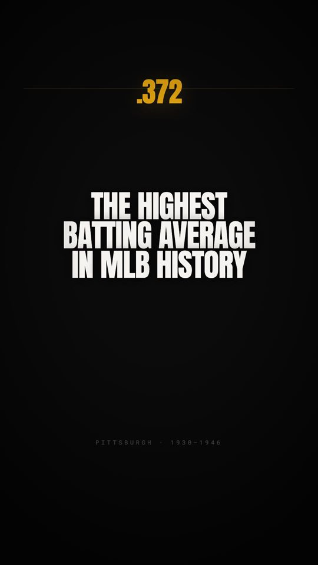
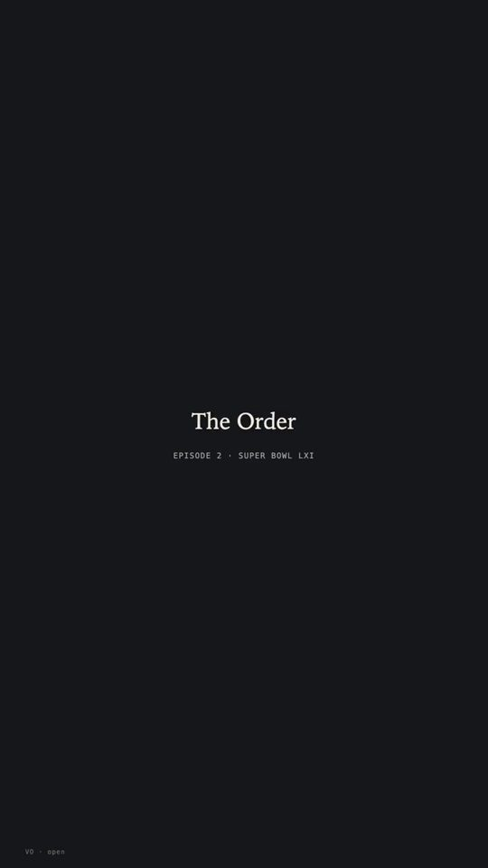

Vikram Kedar
I make short films and small systems, most of them with AI in the loop: a personal-finance series where every number is computed, not quoted, Pittsburgh sports stories with every claim sourced, generated short films where the medium's failure modes are the subject, and experiments where four models answer the same question blind and then argue about it.
Start here
Everything, in order ↗The Gardener
A man spends his life defending one square metre. The ending is not how big it got, it is what he missed.

0:45The best hitter in baseball history was a Pittsburgh catcher
Josh Gibson, the Grays and the Crawfords, and the day MLB rewrote its record book.

12:34Four AIs rank Super Bowl LXI and agree on nothing
Nine teams across four lists. The split tracks each model's training cutoff, not football.
The series
Open the archive ↗AI Films
Original short films where every frame is generated, plus the making-of for each. One cut per generation, nothing reused. The constraints of the medium are written into the stories rather than fought.
Watch →Business Ideas
Twenty under $10,000, twenty under $1,000, twenty on one subscription, ten the North Hills is missing. Every claimed gap is checked against what already trades there, which has killed ideas on the way in.
Watch →One Poem
Two models write one poem. Every decision was delegated to a recorded rule; the append-only ledger of what happened became a seven-minute documentary.
Watch →The Latent Gallery
One hashed brief, two AI image artists working blind, then attack and revise. A third model critiques the finals without knowing who made which, and the verdict goes on the record.
Watch →Money Math
Minimum payments, the Rule of 72, the 1% fee, the tax-bracket myth. Every figure on screen is computed by one finance engine, so the numbers can be checked, not just believed.
Watch →Boom & Bust
AMD at $1.62. Blockbuster turning down Netflix for $50 million. Amazon down 94% on the way to turning $1,000 into millions. Every figure is a dated close with a source.
Watch →Five for Five
Four AIs each place $1M of paper money across at most five stocks for five years, blind, with their own return case and risk. No attack, no judge. The market scores it.
Watch →Ticker.exe
A show about a simulated $1M portfolio: a passive core and an AI-managed sleeve, marked daily against the index. Nothing in it is real money.
Watch →Pittsburgh Stories
The Steelers cost $2,500. The Yankees outscored the Pirates 55 to 27 and lost. Four Hall of Famers in one draft. Lemieux buys the Penguins. Every claim sourced in the project notes.
Watch →Vik's Picks
Four AI models make independent straight-up picks for every NFL game of the week. Winners only: no spreads, no odds, no gambling language.
Watch →Vik's Picks Arena
Two models pick blind, see each other's picks, attack the ones they think are wrong with a stated fact, then hold or flip. Picks lock before kickoff and the scoreboard decides.
Watch →Final Score
Four AIs call the final score of every game on one slate, blind, one line of reasoning each. No attack, no judge. Cards lock before the first kickoff and the finals grade them.
Watch →The Parlay
Two models build a four-leg paper parlay for one game, blind, then attack and hold or revise. I pick one before kickoff and the box score grades every leg. Paper only.
Watch →Time Machine League
The greatest teams ever in one bracket, ten thousand simulated games per matchup and one shown, chosen by a seed committed before the run. No AI anywhere in the engine.
Watch →The Order
Four AIs rank the same five things blind, with a figure and a reason on every place, then attack each other and hold or change. No judge: a named source publishes the real table.
Watch →The Open Question
A real number on a question nothing will ever settle, with the commitments underneath marked prior, evidential or methodological. There is no grader here, by construction.
Watch →First Tuesday
A probability on a future election, the variable that decides it, and every assumption marked structural or contingent. Then they attack the assumptions. The election grades it.
Watch →Code Duel
Two models solve the same task blind and attack each other's code with test cases. A hidden test suite, hashed before either sees the task, is the only judge.
Watch →The Inherent Response
Two models answer from the gut, blind, then attack and hold or revise. I judge in my own words and the judgment goes in the ledger, including when I delegated it.
Watch →Refusal Engine
A ladder of questions ascending in discomfort, and the same question asked twice to measure drift. A drift score means nothing without a noise floor, which is the point.
Watch →How it works
Each series is a small system, not a one-off edit. A locked script, a computation engine, or a ledger sits underneath, and the video is rendered from it. That is what makes the work checkable: change the input and the film changes with it.
AI is in the loop as a writer, a participant, or a narrator, never as the referee. Where two models compete, a program that was fixed before they started decides who won.
- 1Computed, not quoted. Every number on screen in Money Math comes out of one finance engine that can be re-run.
- 2Sourced, not remembered. Every claim in a sports story has a citation in the project's metadata before it is rendered.
- 3Recorded, not retold. When models compete, every move goes into an append-only ledger. Nothing is retried for a prettier result.
- 4Locked before the outcome. Picks lock before kickoff. Test suites are hashed before the task is revealed.
- Four NFL shows are locked for Week 1 and one board grades all of them against a single archived scoreboard pull. Picks, the Arena, Final Score and the Parlay all settle after Monday night.
- The Order asked four models to rank Super Bowl LXI. Nine teams came back across four lists, and the disagreement tracks each model's training cutoff rather than any football reasoning.
- The Open Question put twelve attacks into four credences and moved nobody, because three of the four named a prior as their own weakest link.
- Three generated short films in three days, each with a making-of built from the production's real artefacts. The rule that made them work: one cut per generation, nothing reused.
- The archive at acesandbabes.com holds all 71 finished pieces, in the order they happened.